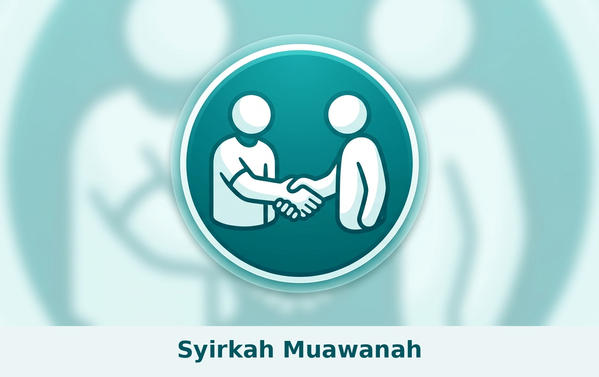

Mengenal Murabahah (1): Jual Beli yang Jujur dan Terbuka
8 September 2026 · oleh Khodim SyirkahMu
Seri Belajar Murabahah — Bagian 1 dari 4
Murabahah Edukasi

Assalamu'alaikum, Sahabat SM.
Mulai edisi ini, kita akan belajar bareng soal satu istilah yang mungkin sering Sahabat dengar tapi belum tentu paham betul artinya: Murabahah. Ini bukan istilah asing untuk koperasi kita — SM memang sudah menjalankan Murabahah sebagai salah satu layanan untuk anggota. Supaya semua anggota, bukan cuma pengurus, paham cara kerjanya, kita bahas pelan-pelan, sedikit demi sedikit, lewat beberapa tulisan.
Jadi, apa itu Murabahah?
Bahasa sederhananya begini: Murabahah itu jual beli biasa, tapi dengan satu syarat wajib — penjual harus jujur bilang berapa harga pokok barangnya, baru menambahkan keuntungan yang disepakati.
Bandingkan dengan jual beli di pasar biasa: pedagang beli barang seharga berapa, itu rahasia dia. Pembeli cuma tahu harga jual akhir, tidak tahu berapa untungnya. Dalam Murabahah, itu tidak boleh — harga pokok wajib dibuka, keuntungannya pun disepakati bersama, bukan ditutup-tutupi.
Contoh sederhana
Bayangkan begini: putra Sahabat yang sedang mondok di Nailul Muna membutuhkan kacamata baru untuk belajar, tapi Sahabat sedang tidak pegang uang cash penuh saat itu. Koperasi kita bantu belikan kacamata itu dari optik, seharga Rp1.100.000. Lalu koperasi jual ke Sahabat seharga Rp1.500.000, dibayar cicil beberapa bulan.
Bedanya dengan jual beli biasa: koperasi wajib bilang ke Sahabat, "Kacamata ini kami beli Rp1.100.000, kami jual ke Bapak/Ibu Rp1.500.000, jadi keuntungan koperasi Rp400.000." Sahabat setuju di depan, tahu persis dari mana angka itu muncul. Tidak ada yang ditutupi — dan putra Sahabat tetap bisa segera pakai kacamatanya untuk mengaji dan sekolah, tanpa menunggu uang cash terkumpul dulu.
Kenapa ini halal, dan beda dengan riba?
Ini pertanyaan yang sering muncul. Jawabannya ada di dasar yang sangat jelas:
"...Allah telah menghalalkan jual beli dan mengharamkan riba..." (QS. Al-Baqarah: 275)
Bedanya gampang diingat begini:
- Riba = uang bertambah karena waktu berjalan, tanpa ada barang atau usaha nyata di baliknya. Contohnya pinjam uang Rp1 juta, harus balikin Rp1,2 juta, hanya karena "telat" atau "jangka waktu" — tanpa transaksi barang apa pun.
- Murabahah = ada barang nyata yang berpindah tangan (koperasi benar-benar beli kacamatanya dulu, baru dijual lagi), dan keuntungannya jelas asalnya dari jual-beli, bukan dari "bunga waktu".
Nabi Muhammad ﷺ bersabda bahwa tidak halal menjual sesuatu yang belum kita miliki (HR. Ibnu Majah). Ini justru jadi salah satu penjaga dalam Murabahah: koperasi harus benar-benar sudah membeli dan memiliki barangnya dulu, baru boleh menjual lagi ke anggota. Bukan sekadar "pesan dulu, nanti optiknya langsung kirim ke pondok tanpa lewat koperasi" — itu beda, dan bisa jadi masalah secara syar'i.
Kenapa ini penting untuk kita, sebagai anggota koperasi pesantren?
Karena prinsip ini sejalan dengan semangat yang sudah lama dipegang di lingkungan kita — sebagaimana pernah disampaikan KH. Chudlori:
صلاح المعيشة من صلاح الدين وصلاح الدين من صلاح المعيشة
"Baiknya penghidupan berasal dari baiknya agama, dan baiknya agama berasal dari baiknya penghidupan."
Murabahah adalah salah satu cara koperasi kita menjaga agar penghidupan ekonomi anggota tetap berjalan berdampingan dengan kejujuran dan keterbukaan — bukan sekadar cari untung, tapi juga menjaga amanah.
Lanjut ke Bagian 2: Kita akan bahas, langkah demi langkah, bagaimana proses Murabahah ini sebenarnya berjalan di koperasi kita — dari anggota mengajukan, sampai barang di tangan. Nantikan, ya!
Ada pertanyaan soal tulisan ini? Silakan sampaikan ke pengurus SM.